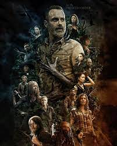

Zumbis pra todo lado
Depois de acordar de um coma em um hospital abandonado, o policial Rick Grimes encontra o mundo que ele conhecia - devastado por uma epidemia de proporções apocalípticas de zumbis. Perto dali, nos arredores de Atlanta, um pequeno acampamento luta para sobreviver enquanto "os mortos" os perseguem a cada esquina. Rick e os outros podem se agarrar à humanidade enquanto lutam para viver neste mundo novo e aterrorizante? E, em meio a condições terríveis e rivalidades pessoais, eles acabarão por sobreviver uns aos outros?